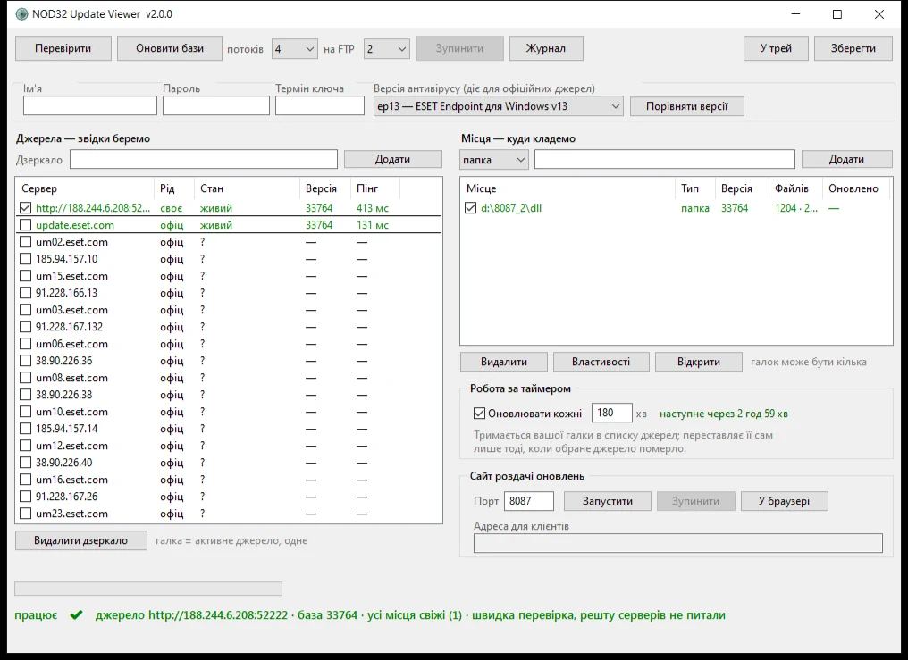

Що це
Програма тримає у вашій мережі дзеркало оновлень ESET: сама опитує сервери, завантажує бази, розкладає їх по папках і FTP та роздає власним сайтом. Антивіруси на робочих місцях оновлюються з неї, а не кожен окремо з інтернету.
версія 2.1.0

Навіщо це потрібно
- Трафік. База важить понад 2 ГБ. Двадцять комп'ютерів тягнуть її двадцять разів — дзеркало качає один раз.
- Машини без інтернету. Ізольований сегмент оновлюється з дзеркала всередині мережі.
- Незалежність від збоїв. Ліг сервер ESET — програма сама візьме інший, зі списку в вісімнадцять адрес.
Головне про програму
- Портативна. Один
.exe, усе поруч із ним. Ані встановлення, ані запису в реєстр, ані Python — чистий AutoIt. - Ключ не обов'язковий. Без нього закрита лише закачка з офіційних серверів; діагностика, чужі дзеркала, роздача — усе працює.
- Розрахована на корпоративні ESET — Endpoint Antivirus / Endpoint Security та File Security: саме в них є поле «сервер оновлень».
- Працює місяцями без нагляду. Таймер, тека, FTP, сайт роздачі — і індикатор унизу, за яким видно стан, не читаючи журналів.
Завантажити Як налаштувати за п'ять хвилин →
Програма не обходить ліцензування ESET і не робить нічого, чого не вміє
сам антивірус: оновлення з дзеркала — штатна можливість
корпоративних продуктів ESET. Вона лише робить це зручно.